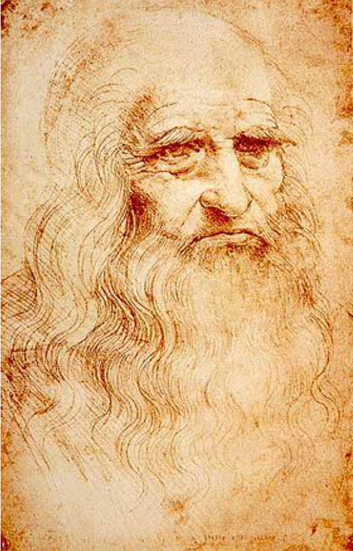

Leonardo è uno dei massimi esponenti dell’unione tra umanesimo e scienza. Uomo d’ingegno e talento universale del Rinascimento italiano; fu pittore, scultore, architetto, ingegnere, matematico, anatomista, musicista, inventore e scienziato. Incarnò a pieno lo spirito universalista della sua epoca, portandolo alle maggiori forme di espressione nei più disparati campi dell’arte e della conoscenza. È considerato uno dei più grandi geni dell’umanità.
Leonardo - Autoritratto